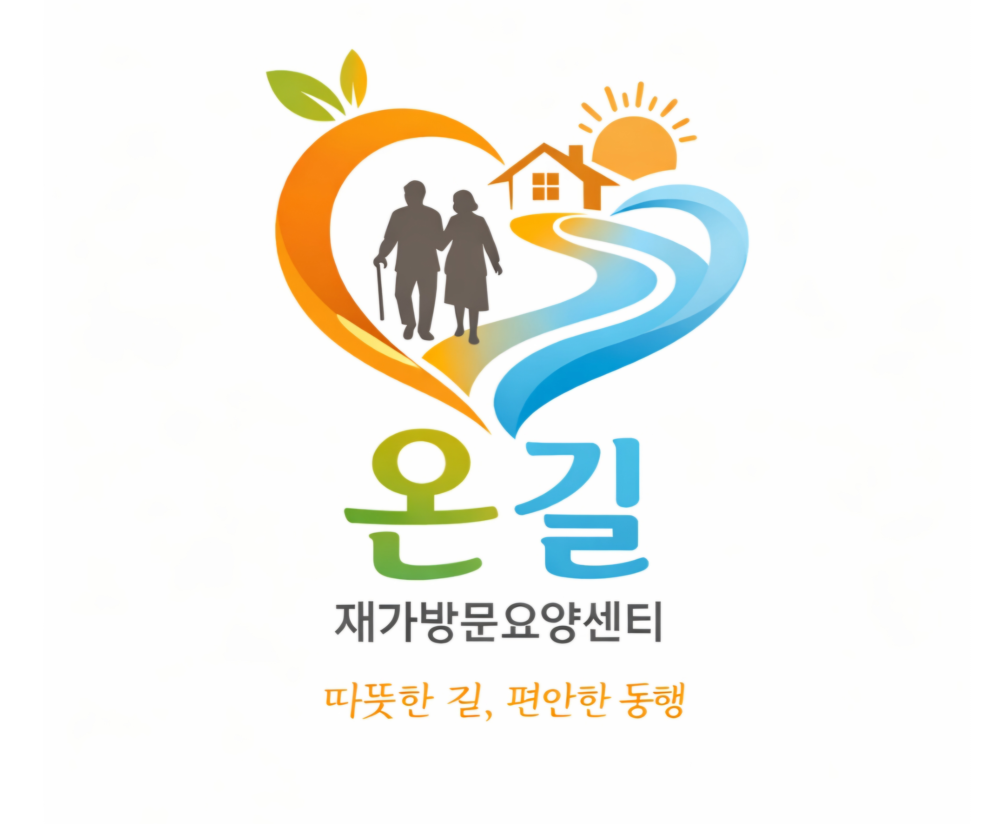
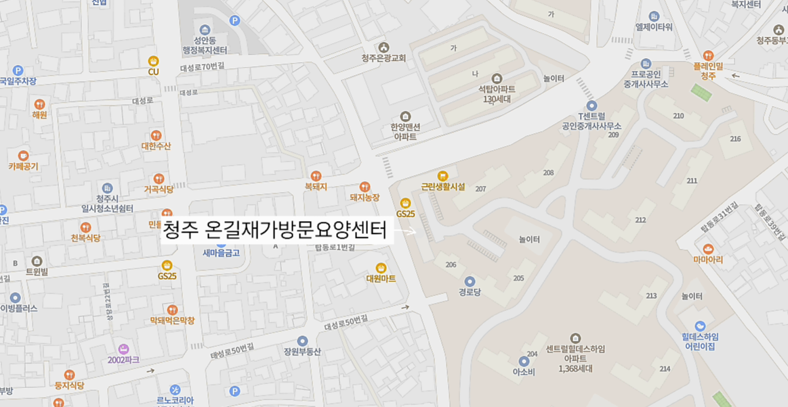
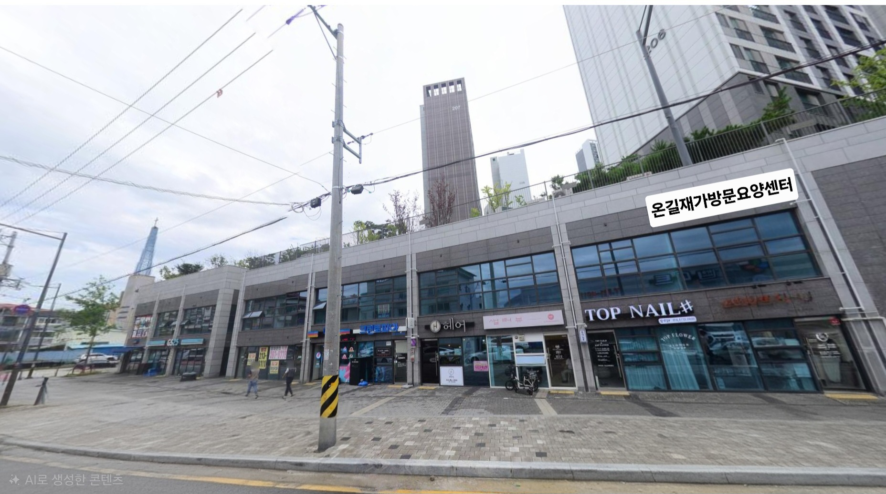

따뜻한 길, 편안한 동행
믿음과 정성으로 어르신의 삶을 돌봅니다
청주 온길재가방문요양센터는 어르신의 건강하고 안정된 노후를 위해 방문요양 서비스를 제공하는 전문기관입니다.
전문 요양보호사가 가정을 방문하여 신체활동 지원 및 정서적 돌봄을 제공합니다.
식사, 이동, 목욕 등 일상생활 지원
말벗 서비스 및 심리적 안정 제공
청소, 세탁 등 가정생활 지원


주소: 충북 청주시 상당구 용담로50 (탑동) 근린생활시설 3동 211호
전화: 010-5073-3165
운영시간: 평일 09:00 ~ 18:00